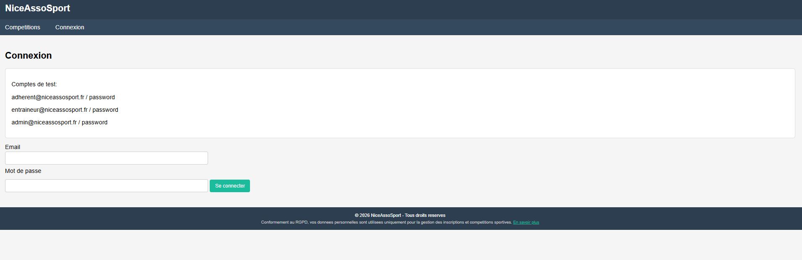
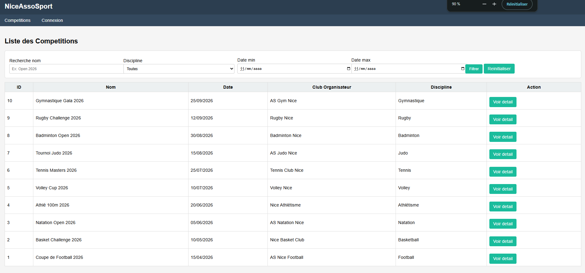
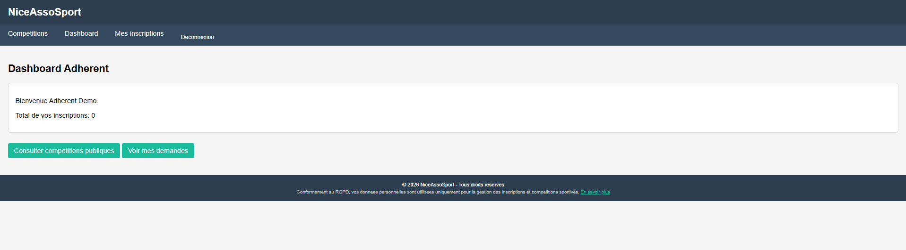
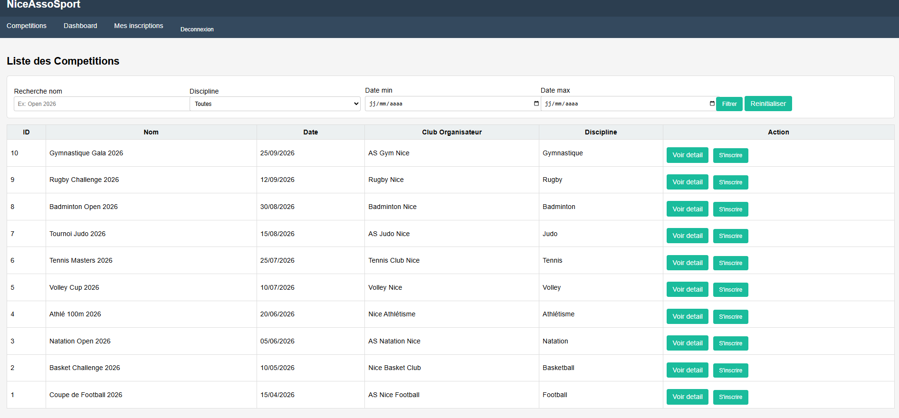
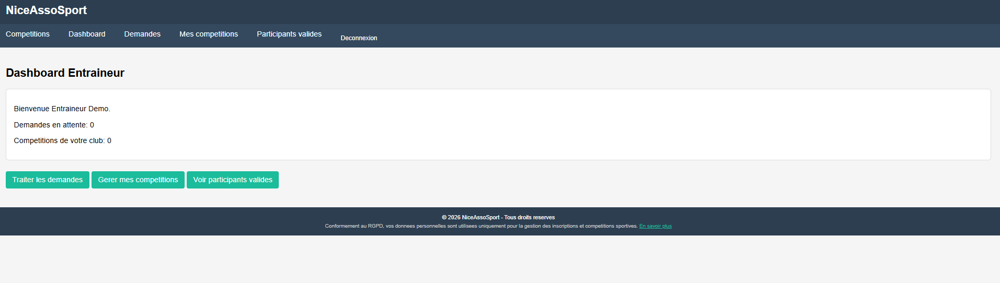
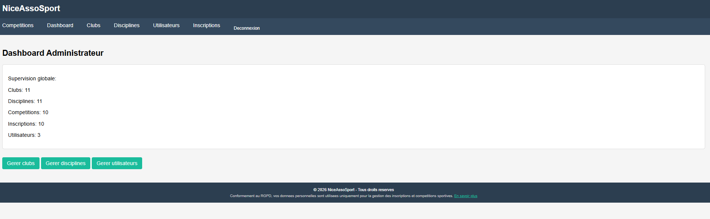
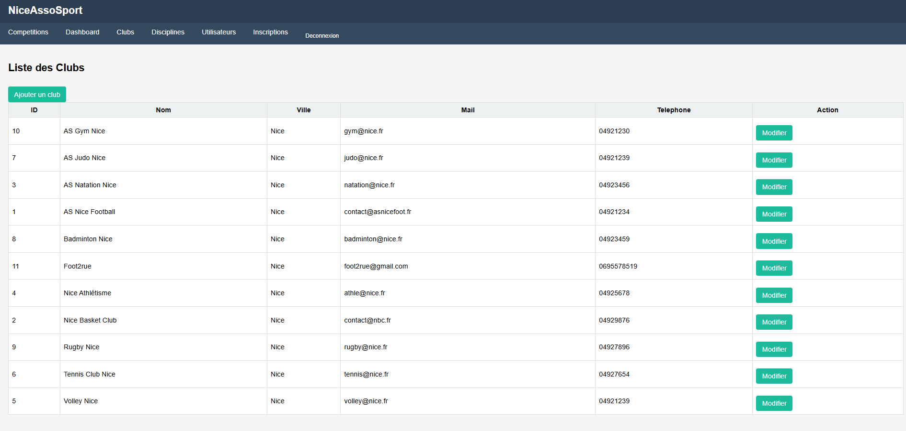
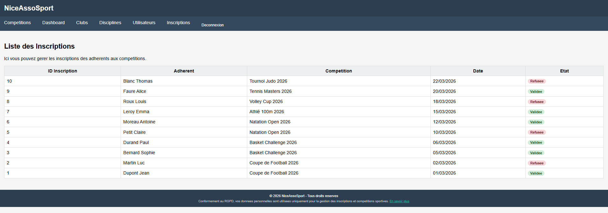

Projet AssoSport – Plateforme de gestion sportive
Fonctionnalités principales
- Consultation des compétitions : Accès rapide au calendrier, aux résultats et aux détails de chaque événement sportif.
- Inscription en ligne : Les adhérents peuvent s’inscrire facilement aux compétitions ou aux entraînements.
- Validation et gestion : Les entraîneurs et administrateurs valident les inscriptions, gèrent les listes et attribuent les rôles.
- Expérience personnalisée : Chaque utilisateur (admin, adhérent, entraîneur…) voit une interface adaptée à ses droits : menus, actions et informations spécifiques selon le profil.








Points techniques clés
- Gestion des droits : Permissions précises pour chaque rôle (admin, adhérent, entraîneur), accès sécurisé et personnalisé.
- Affichage dynamique : Interface qui s’adapte en temps réel au profil connecté, menus et actions sur-mesure.
- Sécurité : Authentification robuste, contrôle strict des actions, confidentialité totale des données utilisateurs.